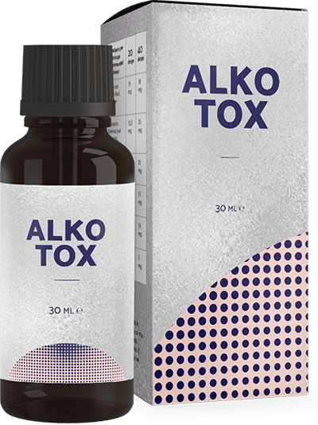

Come medico delle dipendenze, sostengo che chiunque può smettere di bere
Per oltre 20 anni ho lavorato come terapista delle dipendenze in una grande clinica. Durante la mia pratica ho potuto aiutare un gran numero di persone nella lotta contro la dipendenza. Ho letteralmente salvato la vita a molte persone e non avrei mai pensato che mio figlio sarebbe stato tra queste. Per molto tempo, non sono stato in grado di aiutarlo nei modi che conoscevo, e avevo quasi perso la speranza. Sono riuscito a trovare un nuovo metodo. Ora voglio dire a tutti come liberarsi della dipendenza e non tornare mai più all'alcol

Guardando indietro, vedo che la clinica, i pazienti, i seminari e i congressi erano più importanti della mia famiglia. Mi sono dato completamente agli altri, dimenticando la mia vita. Forse è per questo che mio figlio è diventato mio paziente - per un desiderio inconscio di avvicinarsi a me. Le difficoltà in famiglia e le discordie tra persone vicine sono una delle ragioni principali dell'alcolismo. E solo dopo vengono i problemi con il lavoro, il denaro, le relazioni, le anomalie psicologiche e fisiologiche
Io e mia moglie abbiamo fatto di tutto per dare a mio figlio una buona educazione e una vita decente. Solo ora mi rendo conto che gli mancava la comunicazione con me. Così al college ha provato l'alcol e non riusciva a smettere. All'inizio riusciva a nascondere il suo problema di alcolismo...
Ricordo il giorno in cui mi hanno chiamato e mi hanno aperto gli occhi. Fino a sei mesi fa mio figlio è stato espulso e ha iniziato a bere ogni giorno. E più giù per la china - scarico della fidanzata, risse da bar ubriachi, comportamento immorale e i primi problemi con la legge. E tutto questo non lo sapevo e non lo immaginavo nemmeno...

C'erano due anni di difficile riabilitazione davanti a noi. Ho fatto di tutto per aiutarlo. Mio figlio si è sottoposto a cure, pulizia del sangue, corsi di psicoterapia. Dopo un po' c'è stato un notevole miglioramento. Sarebbe stato congedato e si sarebbe diretto direttamente al bar. La cosa peggiore non è stato il ridicolo della gente che era un cattivo terapeuta della droga e non poteva curare mio figlio, ma che ero davvero impotente e mio figlio si stava avvelenando e rovinando la sua vita ogni giorno
Con il tempo, lo psicologo ha contribuito a migliorare il nostro rapporto. Mio figlio ha ammesso che non è più arrabbiato con me. È solo che smettere di bere era al di là di lui. Era come se qualcuno lo costringesse a farlo e lui non potesse fermarsi. Quindi il problema non era psicologico, era una dipendenza fisica di cui non riusciva a liberarsi. Naturalmente sapevo che questo accadeva. I metodi tradizionali di trattamento, che sono praticati in tutto il mondo, non hanno aiutato ... Così ho iniziato a cercare un altro metodo, diverso da qualsiasi altro

In una delle conferenze online, l'oratore più recente era un terapeuta della medicina precedentemente sconosciuto sull'argomento che stavo cercando. Il nuovo rimedio, che ha mostrato dati statistici eccezionali sulla cura dell'alcolismo, è già stato aggiunto alla terapia nei paesi vicini

Quindi, quello che ho imparato. non contiene bloccanti, tranquillanti o altre sostanze familiari. Contiene estratti naturali che servono le funzioni principali nella terapia della dipendenza da alcol:
- produrre una reazione naturale di rigetto all'alcol;
- migliorare le funzioni del pensiero e del linguaggio;
- alleviare i sintomi di astinenza;
- migliorare lo stato emotivo, eliminando i segni di aggressività e depressione;
- purificare il sangue e i vasi sanguigni;
- rimuovere le sostanze tossiche dal corpo
Come specialista con una lunga esperienza, è stato difficile per me crederci. Questo effetto non può essere ottenuto con un solo farmaco, ma solo con un lavoro completo. Dato che avevo provato tutti i metodi conosciuti e non hanno aiutato, ho deciso di dare a mio figlio .
Mio figlio si stava ubriacando da due settimane. Gli ho dato questa mattina per alleviare la sua sbornia. Un'ora dopo, si è fatto la doccia ed è uscito a fare colazione. Per la prima volta dopo tanto tempo, non si sentiva male. Infatti, le sue mani non tremavano, la sua voce era ferma, le sue pupille erano normali. Nessun segno di sbornia. Ha persino scherzato e sorriso come se ieri non fosse sdraiato ubriaco in una pozza del suo stesso vomito...

Dopo due settimane di assunzione di questo farmaco mio figlio non ha avuto un crollo, ma ha condotto una vita normale. Mio figlio è stato esaminato e le sue analisi mi hanno sorpreso: tutti gli indicatori erano normali, il suo sangue era privo di tossine e impurità. E la cosa più importante è che mio figlio ha smesso di bere. Per quanto tempo? E' risultato di sì
Una settimana dopo ha ammesso che non credeva che questo nuovo trattamento avrebbe aiutato, ha iniziato a prenderlo solo per il mio bene. E poi ha smesso di pensare che voleva bere. I pensieri positivi hanno cominciato ad apparire, la condizione stessa è migliorata. Ha persino iniziato a pianificare di trovare un lavoro e di tornare a scuola l'anno prossimo
Sono passati sei mesi da quando mio figlio ha bevuto . Durante questo periodo non ha mai toccato l'alcol ed è tornato alla vita normale, ora sto aiutando anche quelli che pensavo fossero pazienti senza speranza. Sono riuscito a stabilire una fornitura di nel nostro paese. E anche di più! Ora chiunque può ordinarlo direttamente dal sito web del produttore senza alcun pagamento eccessivo o dazi doganali
Se voi stessi o i vostri cari non riuscite a liberarvi della dipendenza e avete già quasi perso la speranza... Sappiate che c'è sempre una via d'uscita! Io stesso sono stato recentemente nei tuoi panni, anche se pensavo che a causa della mia specializzazione questo non sarebbe mai successo. Ci sono tutti i tipi di circostanze nella vita. So quanto la gente spende per la riabilitazione. Nella maggior parte dei casi, somme così grandi non sono alla portata dell'85% dei pazienti. Voglio aiutare tutti e dare il 50% di sconto su . Acquistando questo rimedio, potrete dire addio all'alcol per sempre